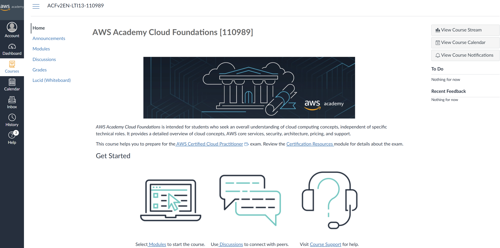

_________________________________________________________________________________________________
AWS
Academy
Software Architecture
February 23, 2026
Richard
Thomas
____________________________________________________________________________________________
Last Updated on 2026/02/19 1 Introduction
In this course we use AWS Academy as a resource to learn how to deploy and manage infrastructure on Amazon Web
Services (AWS), as an example of a cloud based Infrastructure as a Service (IaaS) and Platform as a Service (PaaS)
environment. You have been enrolled in three AWS Academy courses, as well as the AWS Learner Lab. We expect you
to work your way through at least two of the AWS Academy courses as self-study material. The CSSE6400 course
schedule
provides a guide as to when we expect you to complete particular modules in the AWS Academy Cloud
Foundations, and AWS
Academy Cloud Architecting
courses.
The AWS Academy Cloud Developing
course is provided as a supplementary resource. It covers much of the same content as AWS Academy Cloud
Architecting, but AWS Academy Cloud Architecting does so in a more structured and progressive manner. AWS
Academy Cloud Developing treats each topic a little more independently. The advantage of this is
that it also covers a couple of other topics, such as REST APIs and Containers, that you may find
useful.
AWS Academy Learner Lab
will be used in practical sessions from week 4 onwards. You have a second Learner
Lab to
use for the Cloud Infrastructure assignment, so that you start with a fresh budget for the assignment. You have a
budget of $50 USD for each Learner Lab. Once you have spent a Lab’s budget, you will not be able to use that
Learner Lab.
You need to accept your enrolment into:
-
AWS Academy Cloud Foundations [152629] course;
-
AWS Academy Cloud Architecting [152631] course;
-
AWS Academy Cloud Developing [152630] course;
-
AWS Academy Practicals Learner Lab [152632] course; and
-
AWS Academy Assignment Learner Lab [152633] course.
And then login to the AWS Academy and navigate to your courses.
2 AWS Academy
AWS Academy is an educational platform to teach you how to use AWS services. The content has been created by
key developers in the AWS team.
2.1 Enrol in AWS Academy
-
Set up your AWS Academy account by responding to your email invitation and clicking Get Started.
The email invitation will come from AWS Academy. Check your junk/spam folders.
-
Go to https://www.awsacademy.com/vforcesite/LMS_Login to login.
-
Press Student Login.
-
Use the email address that received the email invitation.

2.2 Exploring the Interface
Once you login, you should see your account dashboard. This lists the courses in which you are enrolled.
Click on a course to go to its home page.

Navigate to the Modules tab and you will see the list of modules and their learning content for the course. The
content includes videos, readings, and self-assessment exercises. The self-assessment exercises are to help you
to know that you understand the content. These are not used as part of your assessment in this
course.
Explore the AWS Academy interface and courses. Start working through the AWS Academy Cloud
Foundations course.
You should aim to complete at least half of it this week. Completing all of it this week will let you start the AWS Academy
Cloud Architecting
course next week, which will give you more breathing space to work through that content.